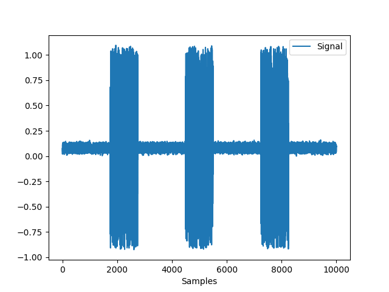
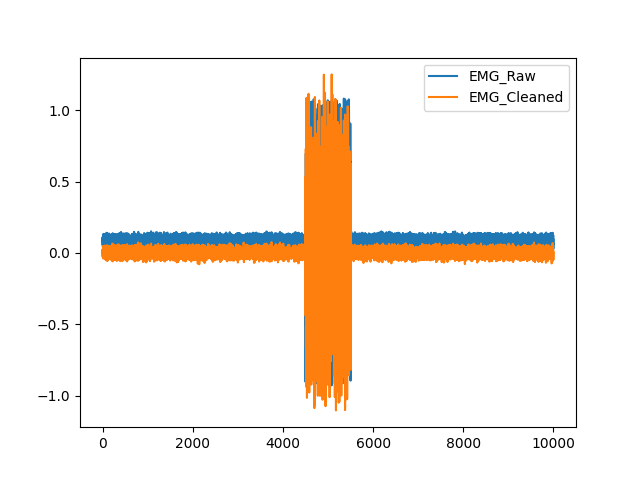
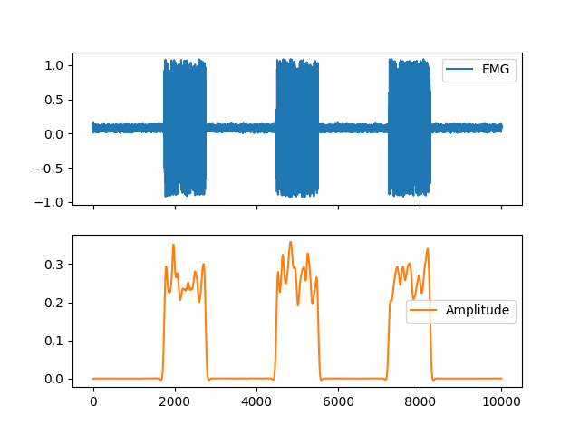
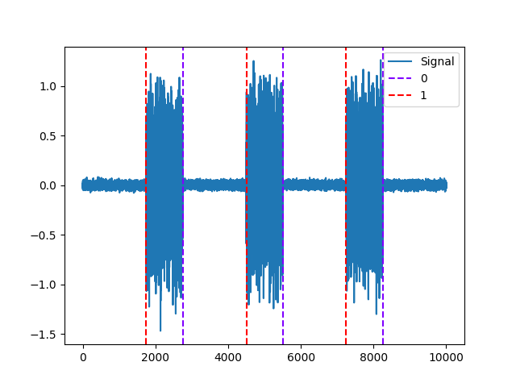

EMG
Contents
EMG#
Main#
emg_process()#
- emg_process(emg_signal, sampling_rate=1000)[source]#
Process a electromyography (EMG) signal
Convenience function that automatically processes an electromyography signal.
- Parameters
emg_signal (Union[list, np.array, pd.Series]) – The raw electromyography channel.
sampling_rate (int) – The sampling frequency of
emg_signal(in Hz, i.e., samples/second).
- Returns
signals (DataFrame) – A DataFrame of same length as
emg_signalcontaining the following columns:"EMG_Raw": the raw signal."EMG_Clean": the cleaned signal."EMG_Amplitude": the signal amplitude, or the activation level of the signal."EMG_Activity": the activity of the signal for which amplitude exceeds the threshold specified,marked as “1” in a list of zeros."EMG_Onsets": the onsets of the amplitude, marked as “1” in a list of zeros."EMG_Offsets": the offsets of the amplitude, marked as “1” in a list of zeros.
info (dict) – A dictionary containing the information of each amplitude onset, offset, and peak activity (see
emg_activation()), as well as the signals’ sampling rate.
See also
Examples
In [1]: import neurokit2 as nk In [2]: emg = nk.emg_simulate(duration=10, sampling_rate=1000, burst_number=3) In [3]: signals, info = nk.emg_process(emg, sampling_rate=1000) In [4]: nk.emg_plot(signals)

emg_analyze()#
- emg_analyze(data, sampling_rate=1000, method='auto')[source]#
EMG Analysis
Performs EMG analysis on either epochs (event-related analysis) or on longer periods of data such as resting-state data.
- Parameters
data (Union[dict, pd.DataFrame]) – A dictionary of epochs, containing one DataFrame per epoch, usually obtained via
epochs_create(), or a DataFrame containing all epochs, usually obtained viaepochs_to_df(). Can also take a DataFrame of processed signals from a longer period of data, typically generated byemg_process()orbio_process(). Can also take a dict containing sets of separate periods of data.sampling_rate (int) – The sampling frequency of the signal (in Hz, i.e., samples/second). Defaults to 1000Hz.
method (str) – Can be one of
"event-related"for event-related analysis on epochs, or"interval-related"for analysis on longer periods of data. Defaults toautowhere the right method will be chosen based on the mean duration of the data ("event-related"for duration under 10s).
- Returns
DataFrame – A dataframe containing the analyzed EMG features. If event-related analysis is conducted, each epoch is indicated by the Label column. See
emg_eventrelated()andemg_intervalrelated()docstrings for details.
Examples
In [1]: import neurokit2 as nk In [2]: import pandas as pd # Example with simulated data In [3]: emg = nk.emg_simulate(duration=20, sampling_rate=1000, burst_number=3) In [4]: emg_signals, info = nk.emg_process(emg, sampling_rate=1000) In [5]: epochs = nk.epochs_create(emg_signals, events=[3000, 6000, 9000], sampling_rate=1000, ...: epochs_start=-0.1, epochs_end=1.9) ...: # Event-related analysis In [6]: analyze_epochs = nk.emg_analyze(epochs, method="event-related") In [7]: analyze_epochs Out[7]: Label Event_Onset ... EMG_Amplitude_Max_Time EMG_Bursts 1 1 3000 ... 1.736918 1.0 2 2 6000 ... NaN NaN 3 3 9000 ... 0.922511 1.0 [3 rows x 8 columns] # Interval-related analysis In [8]: analyze_df = nk.emg_analyze(emg_signals, method="interval-related") In [9]: analyze_df Out[9]: EMG_Activation_N EMG_Amplitude_Mean 0 3.0 0.245107
emg_simulate()#
- emg_simulate(duration=10, length=None, sampling_rate=1000, noise=0.01, burst_number=1, burst_duration=1.0, random_state=42)[source]#
Simulate an EMG signal
Generate an artificial (synthetic) EMG signal of a given duration and sampling rate.
- Parameters
duration (int) – Desired recording length in seconds.
sampling_rate (int) – The desired sampling rate (in Hz, i.e., samples/second).
length (int) – The desired length of the signal (in samples).
noise (float) – Noise level (gaussian noise).
burst_number (int) – Desired number of bursts of activity (active muscle periods).
burst_duration (float or list) – Duration of the bursts. Can be a float (each burst will have the same duration) or a list of durations for each bursts.
random_state (int) – Seed for the random number generator.
- Returns
array – Vector containing the EMG signal.
Examples
In [1]: import neurokit2 as nk In [2]: import pandas as pd In [3]: emg = nk.emg_simulate(duration=10, burst_number=3) In [4]: fig = nk.signal_plot(emg)
See also
ecg_simulate,rsp_simulate,eda_simulate,ppg_simulateReferences
This function is based on this script.
{kind=link}
emg_plot()#
- emg_plot(emg_signals, sampling_rate=None)[source]#
EMG Graph
Visualize electromyography (EMG) data.
- Parameters
emg_signals (DataFrame) – DataFrame obtained from
emg_process().sampling_rate (int) – The sampling frequency of the EMG (in Hz, i.e., samples/second). Needs to be supplied if the data should be plotted over time in seconds. Otherwise the data is plotted over samples. Defaults to
None.
- Returns
fig – Figure representing a plot of the processed emg signals.
Examples
In [1]: import neurokit2 as nk In [2]: emg = nk.emg_simulate(duration=10, sampling_rate=1000, burst_number=3) In [3]: emg_signals, _ = nk.emg_process(emg, sampling_rate=1000) In [4]: nk.emg_plot(emg_signals)

See also
ecg_process
Preprocessing#
emg_clean()#
- emg_clean(emg_signal, sampling_rate=1000)[source]#
Preprocess an electromyography (emg) signal
Clean an EMG signal using a set of parameters. Only one method is available at the moment.
BioSPPy: fourth order 100 Hz highpass Butterworth filter followed by a constant detrending.
- Parameters
emg_signal (Union[list, np.array, pd.Series]) – The raw EMG channel.
sampling_rate (int) – The sampling frequency of
emg_signal(in Hz, i.e., samples/second). Defaults to 1000.
- Returns
array – Vector containing the cleaned EMG signal.
See also
Examples
In [1]: import pandas as pd In [2]: import neurokit2 as nk In [3]: emg = nk.emg_simulate(duration=10, sampling_rate=1000) In [4]: signals = pd.DataFrame({"EMG_Raw": emg, "EMG_Cleaned":nk.emg_clean(emg, sampling_rate=1000)}) In [5]: fig = signals.plot()
{kind=link}
emg_amplitude()#
- emg_amplitude(emg_cleaned)[source]#
Compute electromyography (EMG) amplitude
Compute electromyography amplitude given the cleaned respiration signal, done by calculating the linear envelope of the signal.
- Parameters
emg_cleaned (Union[list, np.array, pd.Series]) – The cleaned electromyography channel as returned by
emg_clean().- Returns
array – A vector containing the electromyography amplitude.
See also
emg_clean,emg_rate,emg_process,emg_plotExamples
In [1]: import neurokit2 as nk In [2]: import pandas as pd In [3]: emg = nk.emg_simulate(duration=10, sampling_rate=1000, burst_number=3) In [4]: cleaned = nk.emg_clean(emg, sampling_rate=1000) In [5]: amplitude = nk.emg_amplitude(cleaned) In [6]: fig = pd.DataFrame({"EMG": emg, "Amplitude": amplitude}).plot(subplots=True)
{kind=link}
emg_activation()#
- emg_activation(emg_amplitude=None, emg_cleaned=None, sampling_rate=1000, method='threshold', threshold='default', duration_min='default', size=None, threshold_size=None, **kwargs)[source]#
Locate EMG Activity
Detects onset in EMG signal based on the amplitude threshold.
- Parameters
emg_amplitude (array) – At least one EMG-related signal. Either the amplitude of the EMG signal, obtained from
emg_amplitude()for methods like"threshold"or"mixture"), and / or the cleaned EMG signal (for methods like"pelt","biosppy"or"silva").emg_cleaned (array) – At least one EMG-related signal. Either the amplitude of the EMG signal, obtained from
emg_amplitude()for methods like"threshold"or"mixture"), and / or the cleaned EMG signal (for methods like"pelt","biosppy"or"silva").sampling_rate (int) – The sampling frequency of
emg_signal(in Hz, i.e., samples/second).method (str) – The algorithm used to discriminate between activity and baseline. Can be one of
"mixture"(default) or"threshold". If"mixture", will use a Gaussian Mixture Model to categorize between the two states. If"threshold", will consider as activated all points which amplitude is superior to the threshold. Can also be"pelt"or"biosppy"or"silva".threshold (str) – If
methodis"mixture", then it corresponds to the minimum probability required to be considered as activated (default to 0.33). Ifmethodis"threshold", then it corresponds to the minimum amplitude to detect as onset i.e., defaults to one tenth of the standard deviation ofemg_amplitude. Ifmethodis"silva", defaults to 0.05. Ifmethodis"biosppy", defaults to 1.2 times of the mean of the absolute of the smoothed, full-wave-rectified signal. Ifmethodis"pelt", threshold defaults toNoneas changepoints are used as a basis for detection.duration_min (float) – The minimum duration of a period of activity or non-activity in seconds. If
default, will be set to 0.05 (50 ms).size (float or int) – Detection window size (seconds). Applicable only if
methodis"biosppy"or"silva". IfNone, defaults to 0.05 for"biosppy"and 20 for"silva".threshold_size (int) – Window size for calculation of the adaptive threshold. Must be bigger than the detection window size. Applicable only if
methodis"silva”. IfNone, defaults to 22.kwargs (optional) – Other arguments.
- Returns
info (dict) – A dictionary containing additional information, in this case the samples at which the onsets, offsets, and periods of activations of the EMG signal occur, accessible with the key
"EMG_Onsets","EMG_Offsets", and"EMG_Activity"respectively.activity_signal (DataFrame) – A DataFrame of same length as the input signal in which occurences of onsets, offsets, and activity (above the threshold) of the EMG signal are marked as “1” in lists of zeros with the same length as
emg_amplitude. Accessible with the keys"EMG_Onsets","EMG_Offsets", and"EMG_Activity"respectively.
See also
emg_simulate,emg_clean,emg_amplitude,emg_process,emg_plotExamples
In [1]: import neurokit2 as nk # Simulate signal and obtain amplitude In [2]: emg = nk.emg_simulate(duration=10, burst_number=3) In [3]: emg_cleaned = nk.emg_clean(emg) In [4]: emg_amplitude = nk.emg_amplitude(emg_cleaned)
Example 1: Threshold method
In [5]: activity, info = nk.emg_activation(emg_amplitude=emg_amplitude, method="threshold") In [6]: nk.events_plot([info["EMG_Offsets"], info["EMG_Onsets"]], emg_cleaned)
Example 2: Pelt method
In [7]: activity, info = nk.emg_activation(emg_cleaned=emg_cleaned, method="pelt") In [8]: nk.events_plot([info["EMG_Offsets"], info["EMG_Onsets"]], emg_cleaned)

Example 3: Biosppy method
In [9]: activity, info = nk.emg_activation(emg_cleaned=emg_cleaned, method="biosppy") In [10]: nk.events_plot([info["EMG_Offsets"], info["EMG_Onsets"]], emg_cleaned)
Example 4: Silva method
In [11]: activity, info = nk.emg_activation(emg_cleaned=emg_cleaned, method="silva") In [12]: nk.events_plot([info["EMG_Offsets"], info["EMG_Onsets"]], emg_cleaned)
References
Silva H, Scherer R, Sousa J, Londral A , “Towards improving the ssability of electromyographic interfacess”, Journal of Oral Rehabilitation, pp. 1-2, 2012.
{kind=link}
{kind=link}
{kind=link}